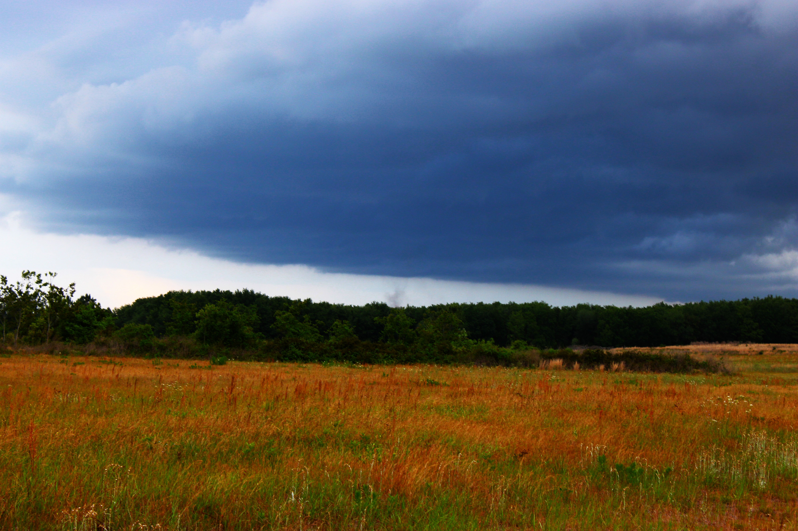

On April 27th, 2025, an extremely rare landspout was sighted just outside of where my weather station was at in Milton, Florida! Just earlier that day, I saw the storms exploding like crazy, but I didn't expect a rare event to occur like this.
The Forecast that day from the SPC were General Thunderstorms, the lowest possible risk. At 3 PM that day, I looked on the radar to find pop-up thundershowers, so I posted about it on Twitter.

5 PM CDT, the thunderstorms were slowly inching towards where my weather station was, I grabbed my DSLR Camera and began taking photos of what I was seeing. At 5:37 PM, as I was weather-spotting in a nearby field, I noticed an area of dust circulating across a field about a half mile away from where I was. I had mistaken other things for tornadoes, so I wasn't sure if I was seeing what I was really seeing.
After my photoshoot, I went back to post about it, I noted that I could be wrong, but I was surprised to see that people were agreeing with me, though it wasn't a tornado, but a landspout! I waited for the National Weather Service to survey the event, but no reports were coming in. I assume that the National Weather Service decided not to survey the event.
I have always thought that tornadoes were photogenetic, I wanted to see one for myself, even if it was small and brief, I just hoped that it didn't destroy anything. And after 7 years, I got to encounter one. I didn't expect this to be the day I got one.